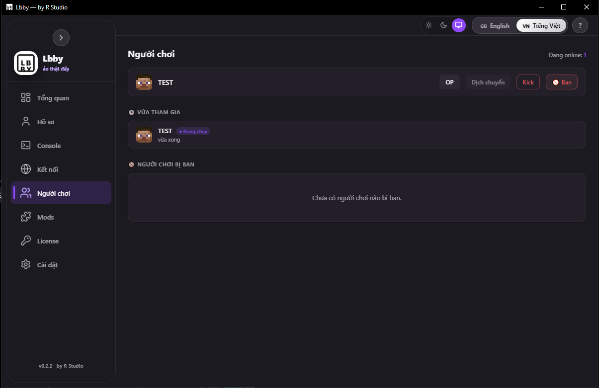
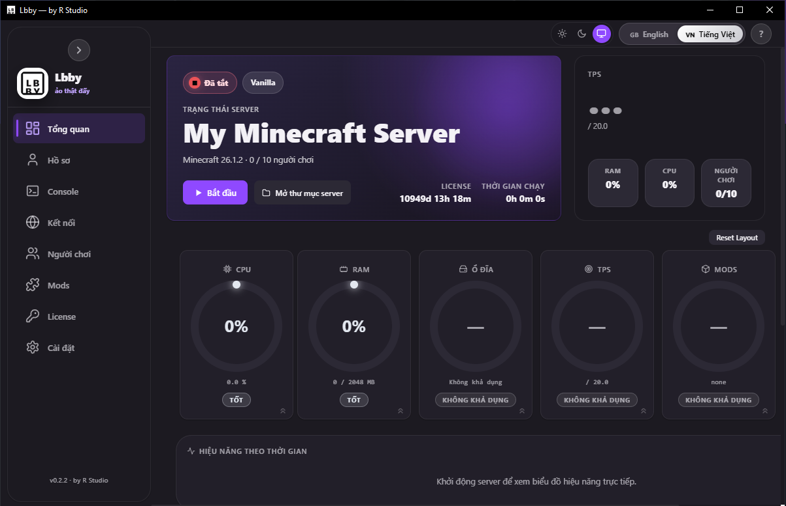
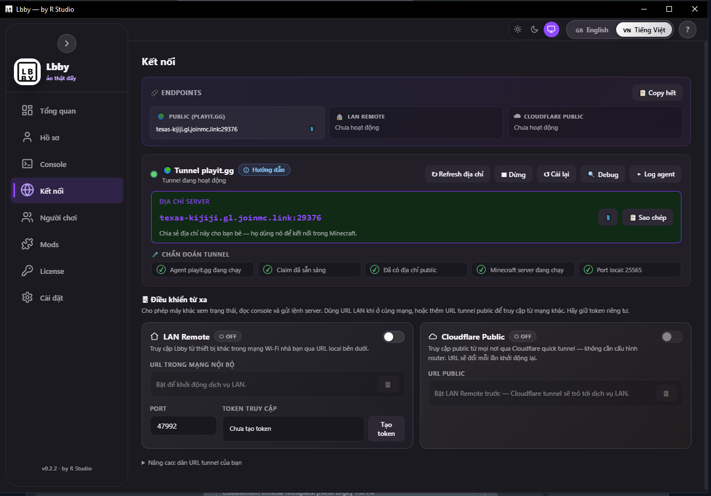
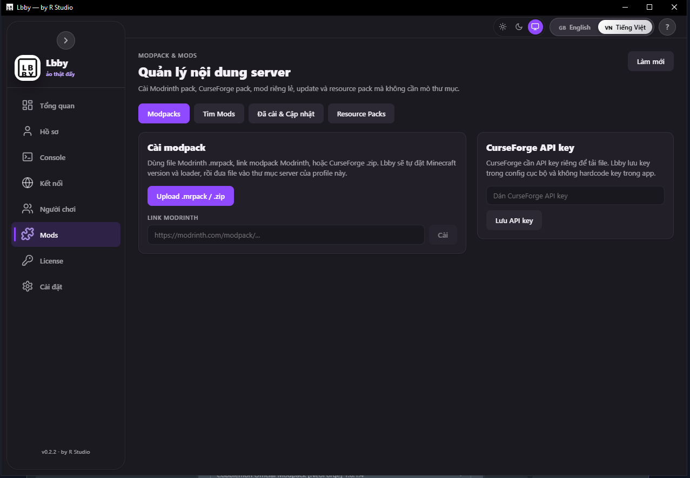

Player Management
Manage multiple players easily on your Minecraft server.
Host Minecraft Java servers without port forwarding, command-line work, or router configuration. Install, manage, and share — all from one native app.
v0.2.3 · Windows · macOS · Linux

An intuitive control panel with mod/plugin management, automatic backup/restore, and everything you need.
From zero to a running server in under a minute. No terminal, no config files, no headaches.
Vanilla, Paper, Folia, Purpur, Bukkit, Spigot, Forge, Fabric, NeoForge, SpongeVanilla, and SpongeForge — all from a guided setup wizard.
Built-in playit.gg tunnel so friends can join from anywhere. No port forwarding or static IP needed.
Create ZIP backups, restore from backups, and schedule automatic backups. Never lose your world again.
View player inventory, health, XP, effects. Kill, heal, freeze, gamemode, give items — full admin control.
Real-time server console with command input. Monitor players, TPS, RAM, CPU, and disk from the dashboard.
JVM optimization presets, TPS monitoring, chunk pre-generation, and customizable dashboard with live ring meters.
Manage your server from your phone or another PC. LAN + Cloudflare Quick Tunnel with secure token authentication.
Browse Modrinth, install mods & plugins, modpack support (Modrinth + CurseForge), and automatic update checker.
Beautiful UI with dark and light themes. English and Vietnamese language support.

Manage multiple players easily on your Minecraft server.

Easily create a public server address — no port forwarding needed.

Automatic installation — fast and easy to use.
Free to use. Available for Windows, macOS, and Linux.
Loading releases...
From download to your first server in minutes.
That's it: install → start → tunnel → share.
Lbby supports 11 server types:
Click any online player to open the detail modal:
.mrpack, paste a link, or upload CurseForge .zipserver-port in server.properties (usually 25565)Recent releases and updates.
Loading changelog...